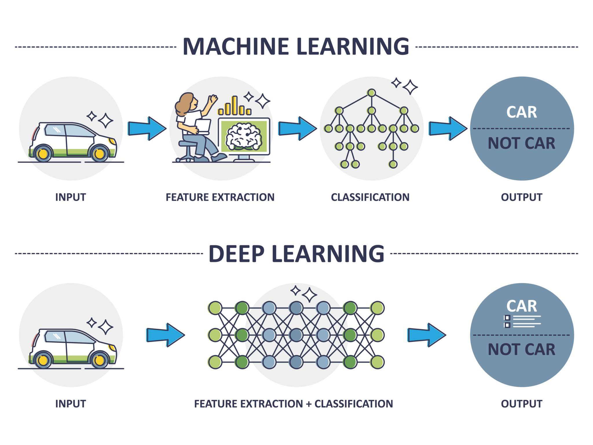

Advanced AI for Healthcare
Introduction to Deep Learning II
Dr. Greg Chism
U of A InfoSci + DataLab
Objective
To reinforce the concepts from Lecture 1 by implementing a neural network to solve the XOR problem using PyTorch.
Code today 😬
Overview of topics
- Recap of key concepts
- Intro to Pytorch
- Intro to the XOR problem
- Applied DL with Pytorch
Review of key concepts
Artificial Intelligence

Why deep learning in health sciences?
DL achieves higher diagnostic accuracy than ever before.
It’s used in critical healthcare applications like disease detection.
High-performance GPUs and cloud computing now power deep learning efficiently in healthcare.
Machine Learning vs. Deep Learning

Deep Learning Networks
DL Components: Neurons

The building blocks of neural networks.
Each neuron performs a weighted sum of inputs, followed by an activation function.
DL Components: Layers
Data enters here \(\rightarrow\)
Processed here \(\rightarrow\)
Result / prediction
DL Components: Activation functions
Characteristics:
Simple and fast to compute.
Keeps positive values, helping the network learn better.
Widely used in hidden layers of neural networks.

Characteristics:
Produces values between 0 and 1, ideal for binary decisions.
Can slow down learning for extreme inputs (very high or low values).
Often used in the final layer for binary classification tasks.
DL Components: Weights
Weights transform input data in the network’s hidden layers.
Each weight indicates the connection strength between nodes.
Initially small random values (see Stochastic Gradient Descent)
DL Components: Biases
Training progression
Training progression
Cost function
A cost function is a mathematical function that calculates the difference between the target actual values (ground truth) and the values predicted by the model.
- Functionally similar to model evaluation
Backpropogation
Backpropogation
Backpropogation
Intro to

What is PyTorch?
PyTorch is an open-source deep learning framework by Facebook AI, popular for its flexibility and ease of use.
It supports dynamic computation graphs, ideal for complex model architectures.
Why PyTorch?
User-Friendly: Pythonic and easy to learn, making it accessible for both beginners and experts.
Dynamic Graphs: Allows on-the-fly changes, enabling flexible model design and debugging.
Widespread Use: Preferred in research and industry due to its simplicity and power.
Strong Ecosystem: Extensive community support with many resources, libraries, and tutorials.
PyTorch key components
Core data structure, similar to NumPy arrays but with GPU support.
Automatic differentiation for gradient-based optimization.
Tools for building and training neural networks.
The XOR Problem
What is the XOR Problem?
The XOR (Exclusive OR) gate is a logic gate that outputs true (1) only when the inputs differ (one is true, the other is false).
XOR is a classic problem in neural networks because it highlights the limitations of simple linear models.
Why Linear Models Fail
Linear models can only separate data points with a single straight line (a linear boundary).
The XOR problem is not linearly separable because you cannot draw a straight line to separate the two classes (0 and 1) correctly.
To solve XOR, we need a model that can capture non-linear patterns, which is where neural networks come into play.
Applied DL with the XOR Problem
Data preparation
Load and normalize the data to ensure features are on a similar scale.
Convert the data into PyTorch tensors for model training.
Use DataLoader to handle batching, which improves training efficiency and stability.
import torch
from sklearn.preprocessing import StandardScaler
from torch.utils.data import DataLoader, TensorDataset
scaler = StandardScaler()
X_normalized = scaler.fit_transform(X)
X_tensor = torch.tensor(X_normalized, dtype=torch.float32)
y_tensor = torch.tensor(y.reshape(-1, 1), dtype=torch.float32)
dataset = TensorDataset(X_tensor, y_tensor)
dataloader = DataLoader(dataset, batch_size=4, shuffle=True)Building the XOR Neural Network
Defining the Neural Network Architecture:
A simple network with one hidden layer, using sigmoid activation functions.
The first layer maps the 2 input features to 2 hidden neurons.
The second layer outputs a single value, predicting the class.
Training the Network
Implementing the Training Loop:
Perform a forward pass, compute the loss, and backpropagate the error.
Update weights and biases using the optimizer.
Monitor loss to ensure the model is learning correctly.
Training
import torch.optim as optim
criterion = nn.MSELoss()
optimizer = optim.SGD(model.parameters(), lr=0.1)
for epoch in range(100):
for batch_X, batch_y in dataloader:
optimizer.zero_grad()
output = model(batch_X)
loss = criterion(output, batch_y)
loss.backward()
optimizer.step()
if (epoch+1) % 10 == 0:
print(f'Epoch {epoch+1}, Loss: {loss.item()}')Epoch 10, Loss: 0.22914057970046997
Epoch 20, Loss: 0.19183704257011414
Epoch 30, Loss: 0.056621454656124115
Epoch 40, Loss: 0.01479067001491785
Epoch 50, Loss: 0.00953312311321497
Epoch 60, Loss: 0.00508252065628767
Epoch 70, Loss: 0.003869409207254648
Epoch 80, Loss: 0.00969128031283617
Epoch 90, Loss: 0.005877059418708086
Epoch 100, Loss: 0.26601335406303406Testing + Evaluation
Testing the Model on XOR Dataset:
Evaluate the model on the entire dataset after training.
Calculate accuracy by comparing predicted values to actual labels.
Summary
Summary
Revolutionizing diagnostics and personalized treatments.
Success depends on understanding neural networks, architectures, and overcoming challenges.